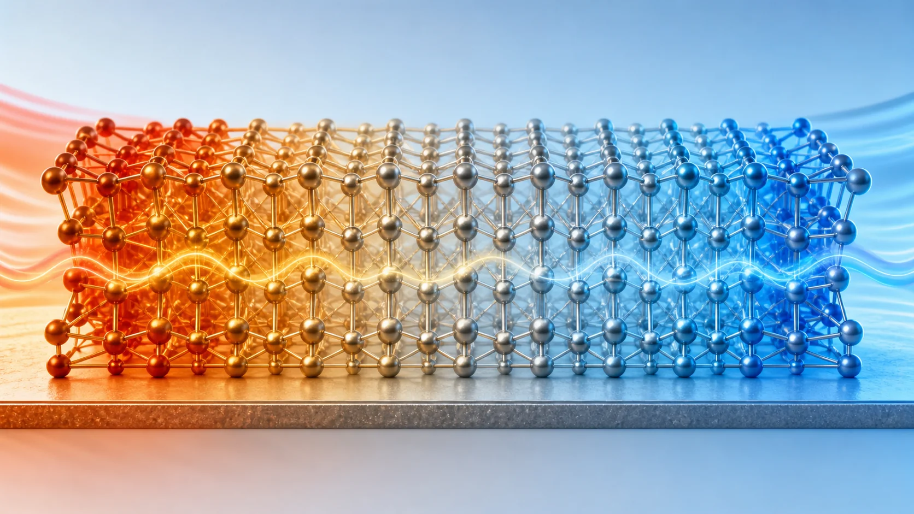
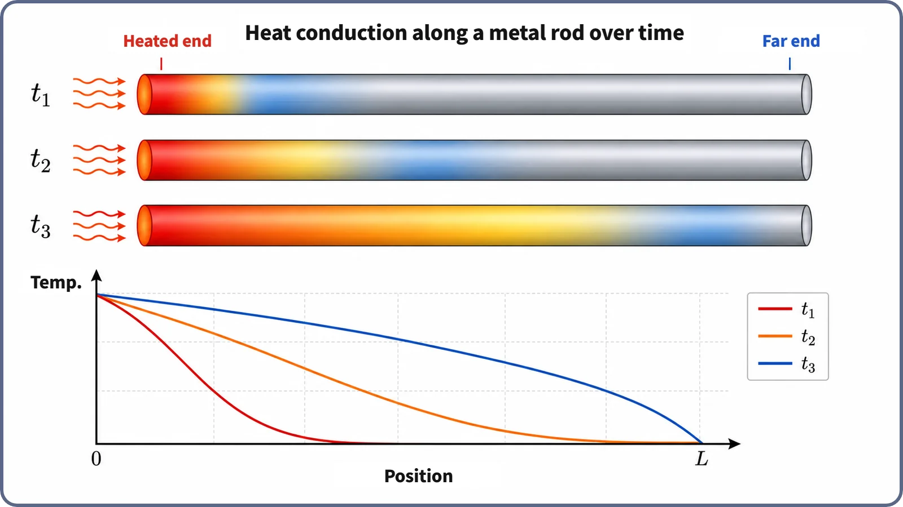

Heat Transfer & Thermal Hydraulics · 128
The Bucket Moves, the People Don't — How Heat Conduction Carries Heat
Like a bucket brigade where the people stay put and only the buckets move, conduction passes energy particle to particle, from inside the fuel out through the cladding.

In heat conduction, the atoms and molecules of a material stay roughly in place; only their vibrational energy is handed from neighbor to neighbor, just as buckets travel down a bucket brigade while the people stand still. Fourier's law, q″ = −k × (dT/dx), says more heat flows when the temperature gradient is steeper and the thermal conductivity is higher. In a reactor, conduction carries heat from inside the fuel through the cladding; at the cladding surface, convection takes over.
The bucket brigade
Long before modern fire engines, when a building caught fire, people formed a single line from a river or well to the flames. A bucket of water was passed to the next person, then the next, and the next, until it reached the fire. This was the bucket brigade. Here's the interesting part: nobody in the line ever runs from the well to the fire. Everyone stays in place and simply hands the bucket along. Yet the water still travels from one end of the line to the other. The people stay put, but the water (or, more precisely, what it carries) moves. The phenomenon we're looking at today, heat conduction, works in a surprisingly similar way.
Nobody moves, yet it reaches the end
Look closer at the bucket brigade. A person who receives a bucket doesn't walk anywhere; they just stretch out their arms and pass it on. Each person in the line barely leaves their spot, while the bucket, and the water in it, keeps moving down the line.
Heat conduction inside a material works on the same principle. The atoms and molecules that make up a material jiggle more vigorously in place the hotter they are (in a solid, they vibrate within a fixed crystal lattice). That jiggling, that vibrational energy, is what we call "heat" at that spot. When a vigorously jiggling particle in a hot region bumps into, or otherwise interacts with, a less agitated neighbor, part of its energy passes to that neighbor. That neighbor passes energy to its own neighbor, which passes it to the next, and so on down the chain. Just as the water moved while the people stayed put, in heat conduction the atoms and molecules themselves don't travel far; only the energy moves, handed from particle to particle.
One more thing: in metals, a second team joins the relay. Metals contain free electrons, electrons not tightly bound to any atom that can move around relatively freely, and they act as an extra express lane that carries energy much faster. That's why metals generally conduct heat better than ceramics or plastics. There are several reasons the cladding that wraps reactor fuel is made of metal (a zirconium alloy), and passing heat along well is one of them.
In numbers: steeper temperature, better conductor
The whole phenomenon fits in one short equation, the most basic relation for heat conduction, known as Fourier's law of heat conduction:
q″ = −k × (dT/dx)
Here q″ is the amount of heat flowing through a unit area (the heat flux), k is the thermal conductivity, a number that says how well the material passes heat along, and dT/dx is the temperature gradient, how steeply temperature changes with position. The minus sign simply records the rather obvious fact that heat always flows from hotter to colder.
The message is simple. The steeper the temperature difference (in bucket-brigade terms, the bigger the "energy gap" between the people ahead and behind), and the better the material is at letting heat through in the first place (k), the more heat crosses each unit of area. How much k varies from material to material, and how that difference actually affects fuel temperature, is a story for next time. Today we'll stop at how conduction itself works.

Inside a reactor, where does conduction's job end?
In a reactor, heat from fission first moves by conduction from the center toward the surface inside the solid fuel (mostly uranium dioxide ceramic pellets). It then crosses a very narrow gap and passes through the metal cladding, again by conduction. Once the heat reaches the outer surface of the cladding, though, things change. From the point where it passes into the flowing coolant (water, for example), a completely different mechanism takes over the job: convection, in which the fluid itself moves in bulk and carries the heat along with it.
So "inside the fuel to the cladding" is conduction territory: the particles stay put and only energy is handed along. "The cladding surface to the coolant" is convection territory, more like the bucket carriers themselves walking off with the water. Convection in detail is a topic for another time; today we just draw the line between the two, which differ in whether the material itself moves.
Neighboring ideas easily confused with conduction
Conduction (this post) vs. convection (covered elsewhere). In conduction the particles of the material don't move on a large scale and only energy passes to neighbors. In convection the fluid itself moves in bulk, carrying the heat it holds. Whether the particles (the material) themselves move is the key dividing line.
Conduction (this post) vs. radiation. Radiation transfers energy as electromagnetic waves without any material medium, so it can happen even in a vacuum. Conduction always needs a medium whose neighboring particles can interact.
Thermal conductivity (a material property, this post) vs. heat transfer coefficient (covered elsewhere). Thermal conductivity (k) is used for conduction through the inside of a material. The heat transfer coefficient (h) is mainly used for convective heat transfer between a solid surface and a fluid. The names sound alike, but they are different numbers attached to different phenomena.
Conduction as a mechanism (this post) vs. the temperature profile of a fuel pellet (covered earlier). The earlier story showed a result: why the fuel is hottest at its center and cooler toward the surface (the shape of the temperature curve). Today we looked at the underlying principle that produces that result: energy handed from particle to particle.
Two common misconceptions
Misconception 1: "For heat to travel through a solid, the material itself has to move." No. The atoms of a solid only vibrate in place within the crystal lattice. What travels is the energy of that vibration, not the atoms. Just as the people in a bucket brigade hold their places, so do the atoms.
Misconception 2: "A material with higher thermal conductivity always transfers heat faster and in greater amounts." Thermal conductivity (k) is a property of the material, but how much heat is actually transferred also depends on the size of the temperature difference, the thickness and the cross-sectional area (think back to the equation). You can't judge the transfer rate from thermal conductivity alone.
Today in one breath
- Heat conduction is heat moving through a material while its particles (atoms and molecules, plus free electrons in metals) stay roughly in place, handing their vibrational and kinetic energy to neighboring particles.
- Like a bucket brigade, the people in line (particles) stay where they are and only the buckets (energy) move down the line.
- The relation is summed up by Fourier's law of heat conduction, q″ = −k × (dT/dx): the steeper the temperature gradient and the higher the thermal conductivity, the more heat flows.
- In a reactor, conduction covers the path from inside the fuel through the cladding; from the cladding surface into the coolant, convection takes over, with the fluid itself moving and carrying heat.
- Conduction and convection both move heat from hot to cold, but they differ fundamentally in whether the material itself moves.
Next, we'll shift our view slightly: if materials differ in thermal conductivity, their ability to "pass the bucket," how does that actually change the fuel temperature?